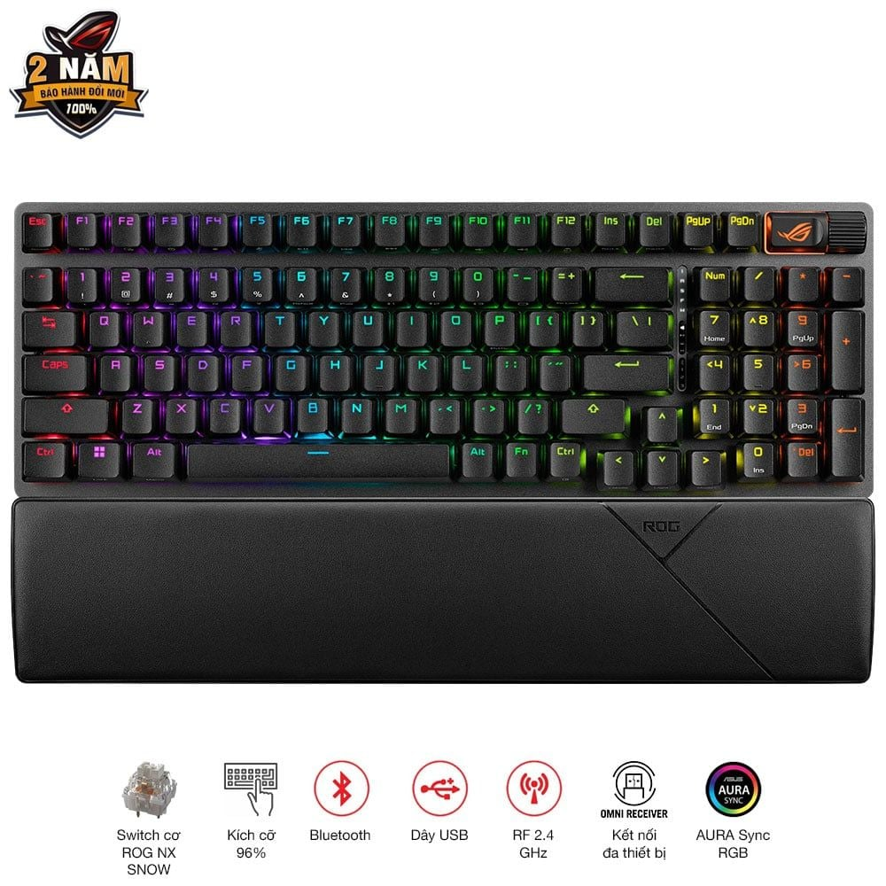

Bàn phím Asus ROG Strix Scope II 96 Wireless ROG NX Snow Switch
Bảo hành chính hãng toàn quốc.
Hỗ trợ trả góp lãi suất 0%.
Hỗ trợ giao hàng toàn quốc
Đặc điểm nổi bật:
Bàn phím ASUS ROG Strix Scope II là mẫu bàn phím gaming cao cấp sở hữu thiết kế hiện đại, hỗ trợ kết nối đa dạng cùng hệ thống LED RGB nổi bật trên từng phím, mang lại trải nghiệm chơi game ấn tượng.
Hệ thống LED RGB đẹp mắt
Sản phẩm được trang bị đèn LED RGB riêng cho từng phím giúp hiển thị hiệu ứng ánh sáng sống động, tùy chỉnh linh hoạt thông qua phần mềm ASUS Aura Sync để đồng bộ với các thiết bị gaming khác.
Kết nối linh hoạt nhiều chế độ
ASUS ROG Strix Scope II hỗ trợ nhiều chuẩn kết nối hiện đại bao gồm USB 2.0 Type-C sang Type-A, Bluetooth 5.1 và kết nối không dây RF 2.4GHz giúp người dùng dễ dàng sử dụng trên nhiều thiết bị khác nhau.
Hỗ trợ Macro chuyên nghiệp
Tất cả các phím trên bàn phím đều có thể lập trình macro, giúp game thủ tối ưu thao tác trong các tựa game yêu cầu phản xạ nhanh và nhiều tổ hợp phím phức tạp.
Thiết kế chắc chắn, trải nghiệm thoải mái
Bàn phím có kích thước khoảng 377 x 131 x 40mm cùng trọng lượng 1012g mang lại cảm giác chắc chắn khi sử dụng. Cáp bện USB Type-A to Type-C dài 2m giúp kết nối ổn định và tăng độ bền khi sử dụng lâu dài.
Phụ kiện đi kèm:
Bộ sản phẩm bao gồm:
- 1 x Bàn phím không dây ROG Strix Scope II
- 1 x Tấm đệm cổ tay
- 1 x Dụng cụ gỡ switch & keycap ROG 2 trong 1
- 1 x Bộ nhận tín hiệu không dây